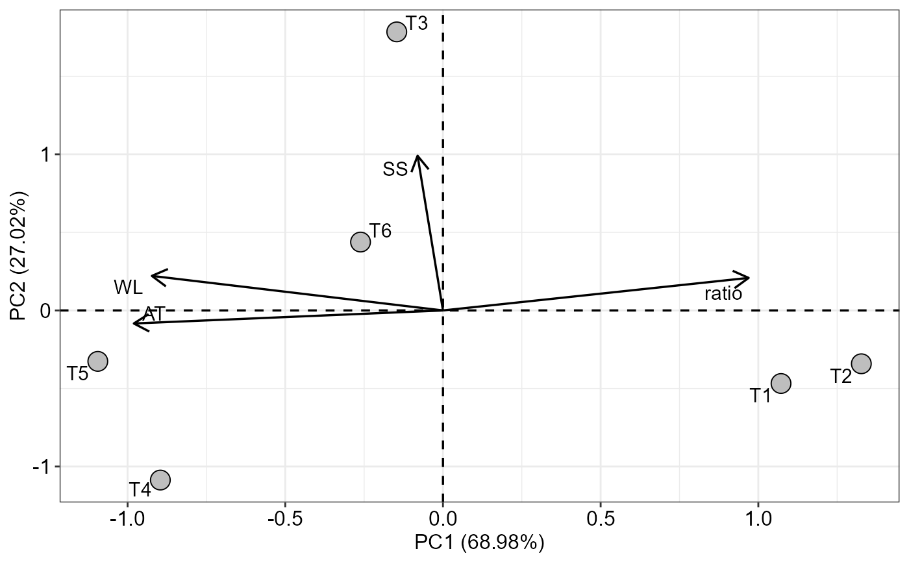

PCA_function.RdThis function performs principal component analysis.
PCA_function(
data,
scale = TRUE,
text = TRUE,
pointsize = 5,
textsize = 12,
labelsize = 4,
linesize = 0.6,
repel = TRUE,
ylab = NA,
xlab = NA,
groups = NA,
sc = 1,
font.family = "sans",
theme = theme_bw(),
label.legend = "Cluster",
type.graph = "biplot"
)Data.frame with data set. Line name must indicate the treatment
Performs data standardization (default is TRUE)
Add label (default is TRUE)
Point size (default is 5)
Text size (default is 12)
Label size (default is 4)
Line size (default is 0.8)
Avoid text overlay (default is TRUE)
Names y-axis
Names x-axis
Define grouping
Secondary axis scale ratio (default is 1)
Font family (default is sans)
Theme ggplot2 (default is theme_bw())
Legend title (when group is not NA)
Type of chart (default is biplot)
The eigenvalues and eigenvectors, the explanation percentages of each principal component, the correlations between the vectors with the principal components, as well as graphs are returned.
The type.graph argument defines the graph that will be returned, in the case of "biplot" the biplot graph is returned with the first two main components and with eigenvalues and eigenvectors. In the case of "scores" only the treatment scores are returned, while for "cor" the correlations are returned. For "corPCA" a correlation between the vectors with the components is returned.
data(pomegranate)
medias=tabledesc(pomegranate)
#> WL SS AT ratio
#> T1 1.8425 14.225 0.900 16.23341
#> T2 1.6775 14.275 0.900 16.73232
#> T3 2.6175 15.000 0.975 15.48409
#> T4 2.6200 14.050 1.050 13.66667
#> T5 2.6375 14.350 1.075 13.50821
#> T6 2.1625 14.650 1.025 14.47664
PCA_function(medias)
#> $Eigenvalue
#> PC1 PC2 PC3 PC4
#> Eigenvalue 2.759004 1.080884 0.15403977 0.006072350
#> Perc 0.689751 0.270221 0.03850994 0.001518088
#> CumPer 0.689751 0.959972 0.99848191 1.000000000
#>
#> $Eigenvector
#> PC1 PC2 PC3 PC4
#> WL -0.55572322 0.21280312 0.8015712 0.05805342
#> SS -0.04848491 0.95290788 -0.2786755 -0.10934227
#> AT -0.59014802 -0.08035566 -0.4366442 0.67424781
#> ratio 0.58356339 0.20056013 0.2986058 0.72805492
#>
#> $`Scores PCs`
#> PC1 PC2 PC3 PC4
#> T1 1.7806015 -0.4866147 0.16102815 -0.115996632
#> T2 2.2035824 -0.3551852 -0.07651296 0.116056752
#> T3 -0.2434196 1.8553698 0.37743090 0.006659998
#> T4 -1.4885719 -1.1298287 0.31476672 -0.004572330
#> T5 -1.8179840 -0.3392381 -0.07591359 0.039973602
#> T6 -0.4342084 0.4554968 -0.70079921 -0.042121390
#>
#> $`Correlation var x PC`
#> PC1 PC2 PC3 PC4
#> WL -0.92307012 0.22124199 0.3145999 0.004523830
#> SS -0.08053464 0.99069614 -0.1093743 -0.008520527
#> AT -0.98025058 -0.08354222 -0.1713737 0.052540953
#> ratio 0.96931335 0.20851349 0.1171965 0.056733887
#>
#> $graph

#>